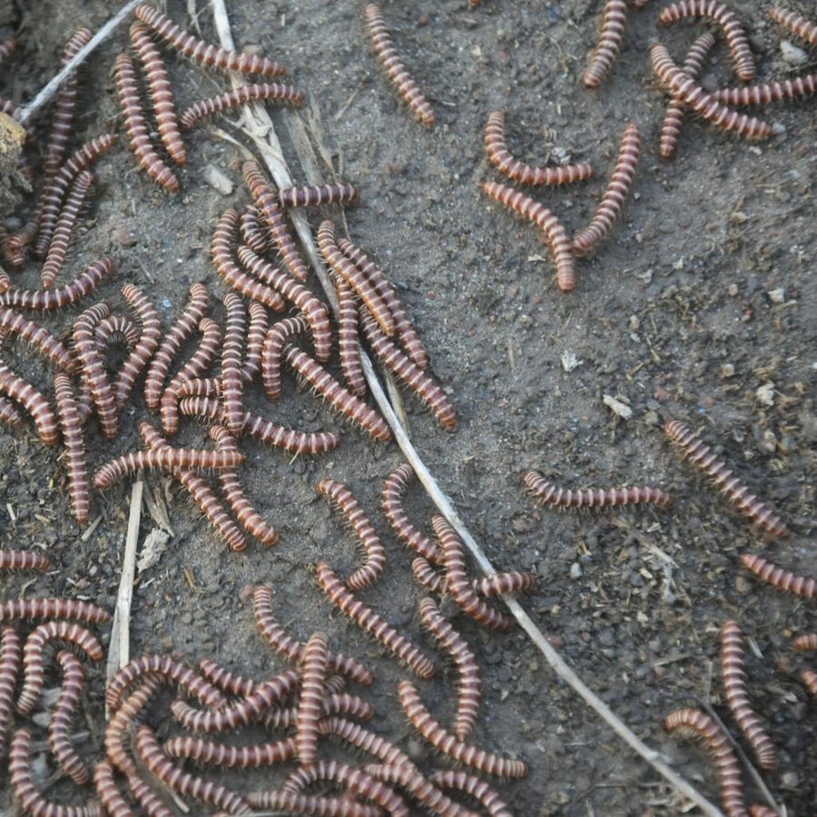

फिप्सन्स मिलीपीडPhipson's Millipede
Streptogonopus phipsoni · Paradoxosomatidae · MYR-0005

- Scientific name वैज्ञानिक नाम
- Streptogonopus phipsoni (Pocock, 1892)
- Family कुल
- Paradoxosomatidae
- Hindi हिंदी
- फिप्सन्स मिलीपीड
- Local names स्थानीय नाम
- phipsons millipede, phipson gojar, streptogonopus phipsoni, chapti gojar, kankhajura
- Status here यहाँ की स्थिति
- native
- Movement आवागमन
- Resident, here all year
- Known from कहाँ दर्ज
- Others have published records from the Basti–Ayodhya districts बस्ती–अयोध्या के ज़िलों से दूसरों के प्रकाशित अभिलेख
- IUCN IUCN
- not evaluated
- Review समीक्षा
- not yet reviewed
When to look कब देखें
Expected mainly in June, July, August, September, October, November. मुख्यतः जून, जुलाई, अगस्त, सितंबर, अक्टूबर, नवंबर में अपेक्षित।
फिप्सन्स मिलीपीड / Phipson's Millipede
Streptogonopus phipsoni (Pocock, 1892) — Paradoxosomatidae
फिप्सन्स मिलीपीड — आम के पुराने बागीचों, खाद के ढेरों और सड़े पत्तों के नीचे पाई जाने वाली एक चपटी, भूरे रंग की गोजर (मिलीपीड)। इसके शरीर पर बीस खंड होते हैं और इसके किनारों पर हल्के पीले रंग के छोटे पंख जैसे उभार निकले होते हैं। खतरा महसूस होने पर यह केंचुली की तरह गोल पहिया बनकर मरे होने का नाटक करती है और बादाम जैसी तीखी रासायनिक गंध छोड़ती है।
Quick Identification त्वरित पहचान
| Feature | Description |
|---|---|
| Habit | Flattened, elongate, slow-moving polydesmid millipede crawling in damp litter |
| Coloration | Rich dark chestnut-brown to reddish-black with pale yellowish lateral keels |
| Segments | Fixed body plan of 20 segments; dorsum flattened rather than cylindrical |
| Paranota | Distinct lateral keel-like projections on each segment giving a serrated outline |
| Defensive Coil | Curls tightly into a flat spiral disc when touched, exuding almond-scented fluid |
Field tip: Lift damp decomposing mango logs in late monsoon mornings; look for flat-backed reddish-brown millipedes with pale yellow side flanges crawling sluggishly over black humus.
हिंदी — कैसे पहचानें: चपटा गहरा भूरा शरीर, किनारों पर पीले रंग के उभार, छूने पर जलेबी की तरह गोल मुड़ जाना, और बादाम जैसी हल्की गंध।
Morphology आकारिकी
Adult description: Slender, medium-sized flat-backed paradoxosomatid millipede. Body composed of 20 segments (including collum and telson) in both sexes. Head smooth, rounded, antennae slender with seven articles, bearing sensitive apical sensory cones. Collum semicircular, narrower than head, smooth. Metazonites with a distinct transverse sulcus; dorsum smooth and polished, rich chestnut-brown or dark mahogany; lateral paranota (keels) moderately developed, horizontal, rounded anteriorly with blunt posterior corners, tipped with contrasting pale cream-yellow or light orange. Venter and walking legs pale yellowish-brown, two pairs of legs per diplosegment. Male gonopods situated on segment 7: slender, curved, coxae cylindrical, telopodite elongate with a distinct spiral seminal groove and slender femoral process.
हिंदी: यह एक मध्यम आकार की चपटी गोजर है।
Behaviour & Ecology व्यवहार और पारिस्थितिकी
- Slow Cursorial Locomotion: Crawls in a rhythmic, undulating wave powered by coordinated leg pairs, pushing deliberately through dense leaf mould.
- Chemical Defence: Repugnatorial glands (ozopores) along the body edges release defensive cyanogenic secretions with a distinct bitter-almond odour.
- Spiraling Thanatosis: Instantly rolls into a tight planar coil with head tucked at the centre when disturbed, shielding soft appendages under hardened dorsal terga.
- Microclimate Fidelity: Strictly avoids direct sunlight and drying winds, confining surface wanderings to overcast, humid monsoon nights.
हिंदी: यह बहुत धीमी चाल से चलती है। खतरा होने पर यह गोल पहिया बन जाती है और शिकारियों को भगाने के लिए बादाम जैसी गंध वाला तरल छोड़ती है।
Life Cycle / Phenology जीवन चक्र
- Monsoon Emergence: Adults emerge from deep soil refuges with the first heavy soaking rains of June and July.
- Copulation: Males mate with females in secluded cavities beneath decaying wood or damp bricks.
- Earthen Nests: Females sculpt small spherical chambers of chewed earth and fecal matter to protect delicate white eggs.
- Anamorphic Development: Newly hatched juveniles possess few segments and three pairs of legs, adding segments through successive moults inside subterranean molting chambers.
हिंदी: पहली बारिश के बाद यह मिट्टी से बाहर निकलती है। मादा मिट्टी के छोटे घोंसले में अंडे देती है और बच्चे धीरे-धीरे बड़े होते हैं।
Host Plants or Prey आहार
- Decomposing Litter: Fibrous rotting leaves of mango, jamun, and peepal.
- Decaying Hardwood: Soft, fungal-rotted wood of fallen orchard branches and bamboo stumps.
- Fungal Mycelium: Browses on fungal mats and surface biofilms thriving in dark damp compost.
हिंदी: यह पूरी तरह शाकाहारी और अपघटक है। यह आम, जामुन और पीपल की सड़ी हुई पत्तियों और पुरानी लकड़ी को खाती है।
Predators / Natural Enemies शत्रु
- Avian Foragers: Common mynas and jungle babblers vigorously toss leaf litter to unearth coiled millipedes.
- Lizards: Indian garden lizards seize wandering individuals along orchard fence lines.
- Nocturnal Amphibians: Common Indian toads swallow millipedes on damp monsoon pathways.
हिंदी: मैना, बगुले, गिरगिट और मेंढक सड़े पत्तों के नीचे से ढूंढकर इन्हें खा जाते हैं।
Agricultural / Human Relevance कृषि प्रासंगिकता
- Humus Genesis: Exceptional biological shredder; fragments tough leaf litter into microscopic particles, accelerating organic soil formation.
- Harmless Inhabitant: Possesses no biting jaws or venomous sting; completely peaceful and harmless to people, crops, and domestic animals.
- Soil Biological Indicator: Abundant presence indicates undisturbed, pesticide-free leaf litter and healthy soil organic matter.
हिंदी: यह सड़े पत्तों को महीन खाद में बदलकर बागीचों की जमीन को उपजाऊ बनाती है। यह बिल्कुल जहरीली नहीं होती और इंसानों को कभी नहीं काटती।
Expected Locally स्थानीय रूप से अपेक्षित
Not a field record. Written from published accounts for eastern Uttar Pradesh. No confirmed local sighting yet — if you have seen it, that is what the atlas needs.
अभी तक स्थानीय पुष्टि नहीं। यह विवरण प्रकाशित स्रोतों से है, किसी अवलोकन से नहीं।
Expected in moist leaf litter beneath old mango orchards, decomposing compost piles, and shaded canal borders across Basti and Ayodhya. GBIF holds published records from these districts. To confirm this species for the Atlas, provide a clear photograph showing habit, dorsal colour, and yellow paranota, along with date, time, and specific location.
Distribution वितरण
Global range: Native to South Asia; endemic to the Indian subcontinent, occurring widely across northern, central, and western India.
In India: Common across deciduous woodlands, orchards, and rural tracts from Maharashtra and Gujarat to the Gangetic plain.
In Uttar Pradesh: Recorded across Gangetic agricultural and orchard soils in Varanasi, Lucknow, and Ayodhya.
In Basti district / eastern UP: Expected throughout mature mango groves, rural farmsteads, and canal banks across Basti and Ayodhya.
हिंदी: यह प्रजाति भारत की मूल निवासी है। उत्तर प्रदेश के पुराने आम के बागीचों और नमी वाले स्थानों में यह बहुत आम है।
Research Questions शोध प्रश्न
- What is the daily leaf litter consumption rate of an adult Streptogonopus phipsoni under Awadh monsoon temperatures? / अवध की गर्मियों में यह गोजर रोजाना कितने सूखे पत्तों को खाकर खाद में बदल देती है?
- How does chemical orchard spraying against mango hoppers impact millipede densities in leaf litter? / आम के बागीचों में कीटनाशकों के छिड़काव का इस मित्र कीट की संख्या पर क्या प्रभाव पड़ता है?
- What is the chemical composition of the cyanogenic defensive secretion emitted during thanatosis? / खतरा होने पर इसके शरीर से निकलने वाले रक्षात्मक तरल में कौन से रासायनिक तत्व होते हैं?
- How deep do adults burrow into subsoil cracks during the dry pre-monsoon heat waves? / गर्मियों में तेज धूप से बचने के लिए यह केंचुआ जमीन में कितनी गहराई तक जाता है?
- Does the mechanical fragmenting of litter by Streptogonopus accelerate fungal decomposition by saprophytic fungi? / क्या इसके पत्तों को चबाने से फफूंद द्वारा पत्तों का सड़ना तेज हो जाता है?
Similar Species मिलती-जुलती प्रजातियाँ
| Species | How to tell apart | हिंदी | |
|---|---|---|---|
| Chondrodesmus cf. camposi | Introduced giant [[flat_backed_millipede\ | flat-backed millipede]]; vastly broader, yellow-margined body | काफी बड़ा शरीर, अधिक चौड़ी पीली धारियां |
| Anoplodesmus saussurii | Slightly darker brown with prominent contrasting white-yellow keels; southern native | अधिक गहरा रंग, स्पष्ट सफेद-पीले उभार | |
| Spirostreptus species | Giant cylindrical millipede; round body cross-section, rolls into a massive sphere | गोल मटोल गोल शरीर, गोल गेंद जैसा मुड़ना |
Field rule: A medium-sized flat-backed 20-segmented chestnut-brown millipede with pale yellow-tipped lateral keels curling into a tight flat spiral identifies Streptogonopus phipsoni.
Taxonomy & Classification वर्गीकरण
Original description. Described by Reginald Innes Pocock in 1892 as Orthomorpha phipsoni in Journal of the Bombay Natural History Society, 7, pp. 131–174.
Subspecies. Monotypic; transferred to the paradoxosomatid genus Streptogonopus Attems.
Family and order placement. Placed in the family Paradoxosomatidae, order Polydesmida, class Diplopoda.
IUCN status rationale. Not evaluated by the IUCN; widespread, common, and ecologically secure across rural Indian landscapes.
हिंदी: रेजिनाल्ड इनिस पोकॉक ने 1892 में इसका वैज्ञानिक विवरण दिया था। यह पैराडॉक्सोसोमैटिडी कुल का सदस्य है।
Photo Gallery फोटो गैलरी
No photos yet — add field photos to media/species/phipsons_millipede/ and run node scripts/sync_photos.js.
Photos needed आवश्यक फोटो
- [ ] Adult crawling on damp black mango humus showing yellow lateral keels (पीले किनारों वाली पत्तियों पर चलती गोजर)
- [ ] Millipede coiled tightly into a protective spiral disc (सुरक्षा के लिए गोल जलेबी की तरह मुड़ी हुई गोजर)
- [ ] Close-up showing antennae and head structure (सिर और संवेदनशील मूंछों का क्लोज-अप)
References संदर्भ
- Pocock, R.I. (1892). Report upon two collections of Myriopoda sent from Ceylon by Mr. E.E. Green, and from various parts of southern India. Journal of the Bombay Natural History Society, 7, pp. 131–174.
- Attems, C. (1936). The Fauna of British India, including Ceylon and Burma: Diplopoda, p. 215. Taylor and Francis, London.
- Golovatch, S.I. & Wesener, T. (2016). A species checklist of the millipedes (Myriapoda, Diplopoda) of India. Zootaxa, 4129(1), pp. 1–75. doi:10.11646/zootaxa.4129.1.1
- Jeekel, C.A.W. (1968). On the classification and geographical distribution of the family Paradoxosomatidae. Academisch Proefschrift, Rotterdam.
- Hoffman, R.L. (1980). Classification of the Diplopoda. Muséum d'Histoire Naturelle, Genève.
- GBIF Occurrence Data — Streptogonopus phipsoni (Pocock, 1892), India (2025).
Source file: species/fauna/myriapods/phipsons_millipede.md